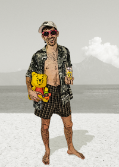
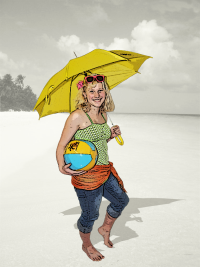
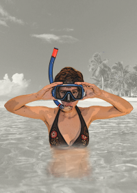
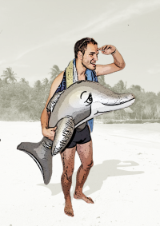
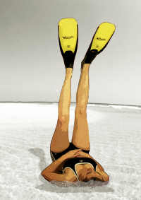
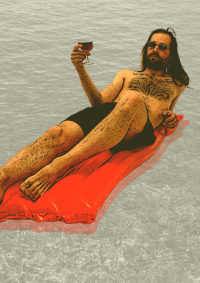
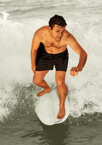

KDO SE O VÁS BUDE STARAT?
Divi |
|
|  |
Člověk, který se snaží dělat od všeho něco, což v konečném výsledku znamená nic pořádně. Čerstvý psycholog a začínající psychoterapeut, který se pořád tak trochu vyskytuje i ve škole. Dovolenou nejraději tráví někde, kde je hezky teplo, ale ne zase moc. Kde jsou vysokánské kopce, ale taky někde v údolí šumí a bublá hezky čistá řeka či jezero, ve kterém se dá opláchnout popřípadě ulovit nějakou tu rybu. Kromě krásné přírody je tu i krapet kultury a hlavně fajn lidi okolo. |
Lucka |
|
|  |
Blondýna bojující celý život proti trapným vtipům o blondýnách. Studentka architektury, která školu studuje, jen aby to vypadalo. Milovnice vytrvalostních závodů typu 24hodin+. A hlavně naivní holka, která pomalu zjišťuje, co je to ono bájné „instruktorské peklo“. Nejlepší dovolená? Na slovenských kopcích se stanem a ideálně jedním dalším spoluputovníkem. |
Hanča |
|
|  |
Introvertní extrovertka. Bojácný nebojsa. Líný neposeda. Typický rozpolcený blíženec, který se neumí nudit. Má ráda dovolenou na vlastní pěst. Nejraději by s přiměřeně těžkým batohem procestovala celý svět. Na cizokrajných cestách se vyžívá v dešifrování místních jazyků a pozorování zvířat. |
Martin |
|
|  |
Věčný student toho času na dobré cestě zbavit se onoho dehonestujícího přívlastku, už snad jen malý krůček od onoho velkého světa dospělých, kde člověk místo za zábavu utrácí za složenky a oblečení mu nekupuje maminka... Ideální dovolenou si představuje bez stresu, nutnosti někam spěchat, bez týmovek ;-), s lidmi, se kterými mu je dobře, na místech, kde je hezky (hory, doly, moře, louka, les, zejména ten s borovicemi, tyčícími se na skále nad řekou a romanticky šumícími v teplém letním větříku při západu slunce za zvuku cikád a cvrčků a vůně ohně z pryskyřicí nasáklého dřeva) |
Marta |
|
|  |
je. V létě taje, v zimě se raduje. Sestra slovního ekvilibristy a bubeníka. Dcera fyzika a fyzičky. Student i pracující. Prací ale nežehlící. Oči, uši - čidla nastražené světu, v běhu střemhlav do nových věcí se pouštějící. Ráda na světě. Ráda mezi lidmi. |
Honza |
|
|  |
Než pochopil, že to pro něj není, snažil se postupně vystudovat tři vysoké školy. Prošel si několik zaměstnání i nezaměstnání. Bohém, který si dělá co chce. Skromný megaloman. Technik. Cestuje nerad. Je rád tam, kde jsou zajímaví lidé. |
Jeff |
|  |
Pracující s duší cestovatele. Věčný optimista. Pozorovatel přírody jak z ptačí perspektivy, tak ze sedačky kola. Kutil, který z nemožného vyrobí možné a ještě k tomu stihne uvařit výborné jídlo. Ideální dovolená je podle něj v údolí u jezera s vysokými vlnami, obklopeného horami se sněhem. Přes den vyběhne na vrchol kopce, pokochá se pohledem, na lyžích nebo na paraglidu sesviští zpátky do údolí, kde stihne probrázdit jezerní hladinu na svém windsurfu. |